A Website, Branding, & Product Redesign For Netflix Party
Company Overivew
Netflix Party is a chrome extension that synchronizes movies and shows simultaneously
together.
My Role
As a product designer, I was responsible for conducting user research, development, design,
branding, and assets.
Timeline
October 2018 to Present: Product, Website, Graphic Design, & Development.
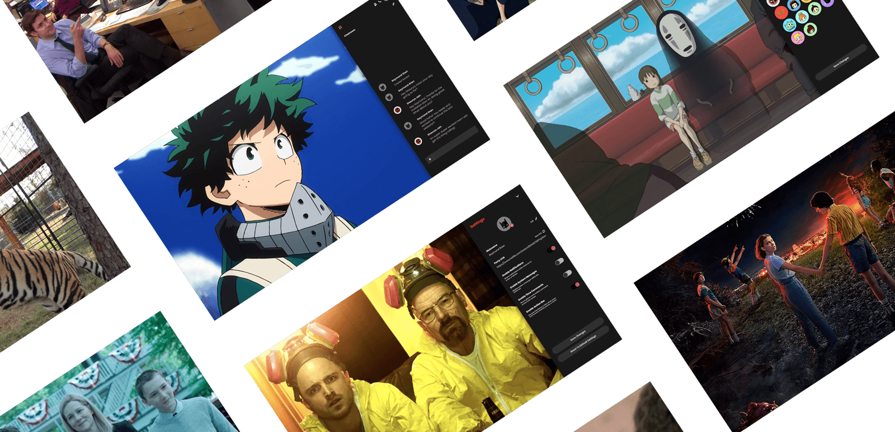
The Objective
Redesigning the product, branding, & user experience.
As a product designer at Netflix Party, I was responsible for redesigning the branding, experience,
interface, and assets to improve & increase the amount of monthly & daily active users +
installation usage on the chrome extension.
Research
Understanding the business goals, competitors, and problems
Competitive analysis
Understanding our competitors on how they solve problems of similar products that Netflix Party
produces has helped me as a designer define what creative solutions could be implemented and
improved for our extension. The three main primary competitors are Airtime, Scener, & Meta stream.
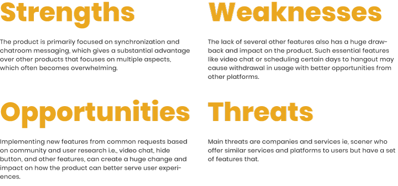
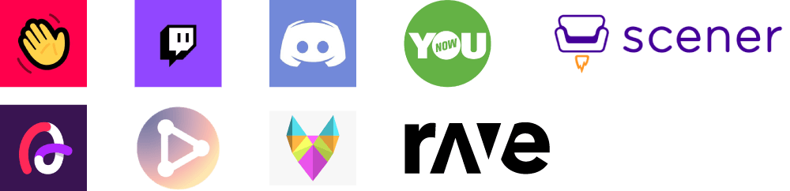
Data Analysis
User data was scarce due to the lack of investment and importance in user data tracking analytic
tools. The only data analytics I had access to were insights of live daily & monthly active users,
along with the number of uninstalls and new user installations. With limited data, I decided to use
these insights to determine if design changes were working or if it isn't working based on
customer
retention and churns.
User Feedback
There was an abundance of user feedback mainly based on digital form, reviews from chrome store, and
insights from support emails. Lots of ideas were gained based on research and collected data with
learnings on what key features, problems, challenges, and improvements could be made to reduce churn
but also to improve the product’s overall user experience. Some of the critical learning pain-points
discovered through user feedback were A. Setting up the party, B. Hiding chat bar, and
C. A complex
learning curve requiring users to dig deep in understanding the product usage.
Researched and reviewed over 1,000 out of 10,000+ emails to better understand user needs, product
problems, features, and improvements.
“ ... install[ed] Netflix party on my laptop & it’s not working. It appears that it is installed,
but
when I go to Netflix to look for the icon to create a party it’s not there. ”
Strategy Plan
Learning about users to improve and enhance Netflix Party's product.
User stories
Based on the identified competitors, research, and given general knowledge of my targeted user
audience. I’ve created several short user stories to define better and prioritize who our users are,
what our users need, and why the user needs the product.
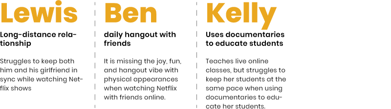
User Flow
Mapping out user flows of different use cases has helped me identify and define problems,
pain-points, and improvements that could be redesigned to enhance user experiences in reaching their
end-goal. Based on the user flow, I had proposed several solutions to improve it’s current user
experiences by: A. Reducing the number of steps required to start a party,
B. Redesign functionalities that are more visible and discoverable, and C. Enhancing user
feedback by
disabling and enabling certain features and functionalities to indicate individual states to users.
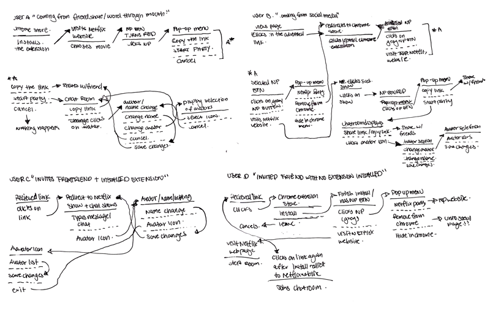
Researching users and defining targeted user audiences
Assessing who my user audiences are has helped me understand who I’m designing for, their beliefs,
behaviors, and familiarities so that I can better align and approach redesigning the product to
capture the defined user audiences.
Based on my user audiences, I conducted further research on user behaviors to understand better what
individual preferences are popular with the given platforms based on a survey I’ve created.
Conclusions collected from user surveys were helpful in ways where I learned about the different
popularities, preferences, and tools that my defined user audiences used daily. From there, I used
the data to conduct further studies and research on particular high-frequency usages of specific
platforms to understand better what works well, how they’re solving societal problems, and what
design strategies could be learned to improve Netflix Party’s product.
The user survey research was conducted among ~ 20 specific targeted user audiences to grasp a better
sense of what platform and personal preferences are making a significant impact in their daily
lives.
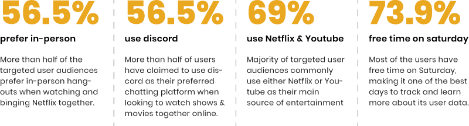
User data consist of international users
Discover
Exploring creative solutions, developing wireframes, and improving the product based on user
research.
Brainstorm & Sketch
I had compiled and concluded simple sketches, layout, features, and ideas based on the initial user
research I've done. The ideas were proposed directly to the CEO about different creative solutions,
problems, and plans on the approach of redesigning the product's user interface, flow, and
experiences. Brainstorming sessions often took place over several different weeks discussing new
features, problems, frictions, and solutions on how to improve and increase the product's user
engagement. We've also talked about how to reduce churn and to improve retention based on the
database provided.
Features such as video call, chat, and other customization tools were discussed during
this process based on feedback and community request features.
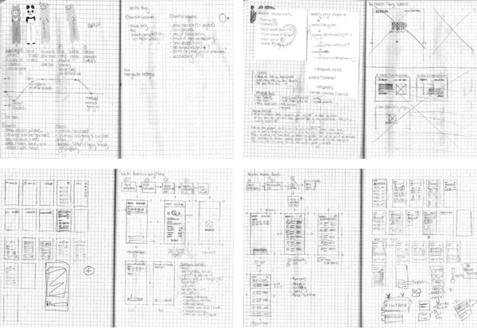
Sitemap
A sitemap helped visualize how the website and extension navigation, structure, and components could
work together. It also helped determine through several different iterations on what parts, pages,
or structures are necessary or if it is unnecessary. One of the critical main parts when developing
a new sitemap for Netflix Party's extension & website was basing it off of essential user data that
I've collected through user research.
I went through ~ 5 iterations rounds to reduce any unnecessary sections and pages both on the
website and extension.
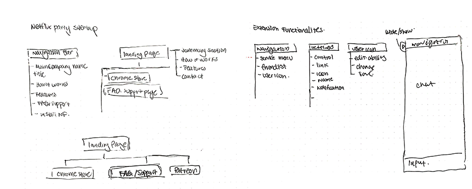
Wireframes
I created semi-low fidelity wireframes to propose new product design changes and layouts based on
initial user research and user needs. The wireframes helped me better assess what functionalities,
layout, and components were working and what wasn't working based on user and team feedback. From
there, I continued working on iterating the wireframe throughout the year based on new features,
feedback, and changes proposed by the CEO.
Tested over ~5 users and learned that some functionalities were missing ie. video chat,
link, hide-show btn, etc.
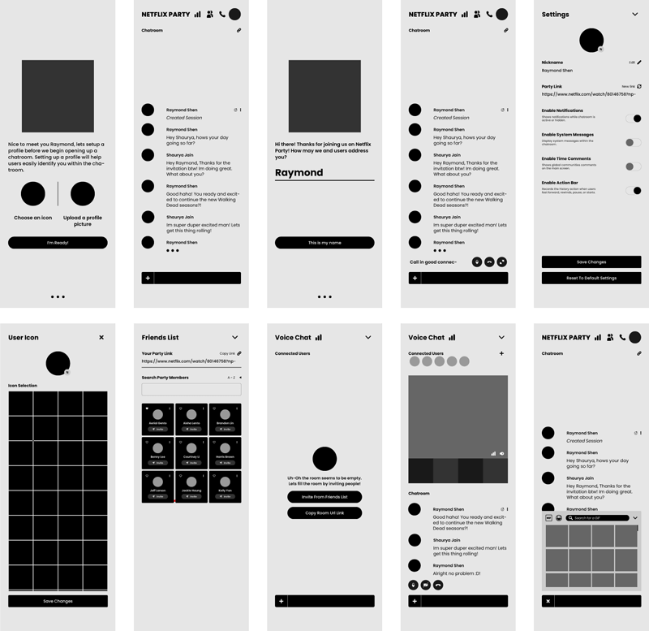
Prototype
Based on the initial semi-low fidelity wireframe and iteration process, I further developed the
structure to a higher fidelity prototype showcasing what the product would look like and function.
From there I developed a simple HTML, CSS, & Invision click-through prototype to conduct user
testing to get an in-depth understanding of how users interact with new design changes and if there
were any obstacles they faced and any positive or negative experiences they had with the
product.
Interesting findings from the old extension test were funcitionalities being too
cluttered, disorganized, and some being unecessary.
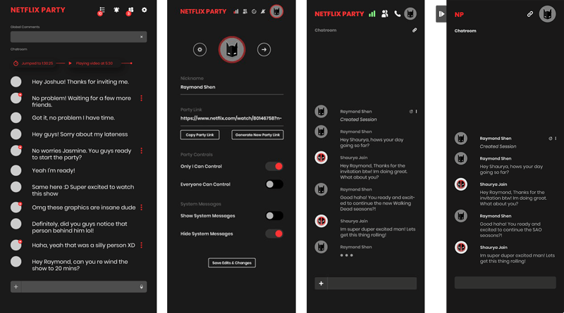
Several generations of different design prototype proposals.
User testing results & insights
Through the several stages of user testing, I had learned a lot about the product’s weakness, holes,
strengths, improvements, & features that are needed to help grow and mature the product over time.
One of the central frictions that prevented users from reaching their goal was the lack of
visibility and discoverability requiring a deep learning curve from users ( which was the
leading
cause 90% of the time users uninstall or think its “broken” ). Another insight was the lack of
features requested by the community needing to have video chat & audio along with several other
features. Lastly, the product lacked simple, fun activities that make the party enjoyable, fun, and
impactful experience.
90% of users struggled to start a party leading to a numerous amount of frustration thinking that
the product is faulty or broken
The solution
Introducing a newly designed product, website, and brand identity to create a cohesive and
delightful user experience.
Redesigning the extensions interface
The initial extension design only had a chat input with a background and user messages
displayed. The barebone design lacked many important functionalities and improper use of UX
design that negatively affected many users' experiences. With the redesign, I came up with
solutions based on research analysis and basic design principles to create a proper layout
structure with hierarchy, usability, accessibility in mind. I also suggested incorporating major
requested features and core functionalities such as video chat & other features to increase
positive user experiences.
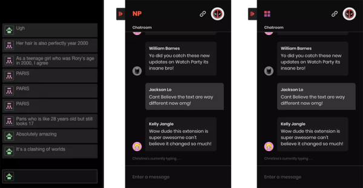
Old Netflix Party extension vs New proposed design
Empowering customization
One of the main objectives for the company was to increase user engagement based on MAU, DAU,
and to increase the trajectory of retention for the business. With the redesign, I’ve resolved
several significant problems by improving the visibility of buttons and functionalities
to help
strengthen and enhance the product’s usability. I also incorporated multiple different features
to the extension based on user feedback, which was: a copy link, hide-show, profile avatar, and
a majority of other product-related features to create delightful experiences in the product.
To increase user engagement customization, and possession was important principles for users to
feel like they own the product rather than a mere user.
Improving usability
To improve usability, I reduced the number of steps needed to start a party by making core
functionalities, buttons, and primary call to actions more visible and prominent.
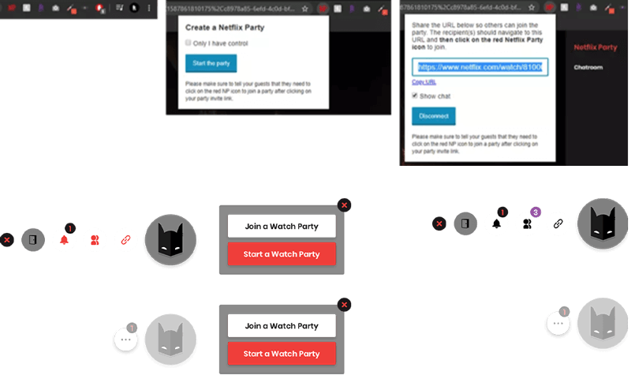
Interactions between users and the product
Incorporating visual feedback helped improve the user experiences between the product through a
simple small banner or notification feedback implementation, indicating that modifications were
received from user inputs. The visual feedback also helped reduce any confusion and created
transparency in communication between the end-user and the product.
Meaningful and percievable feedback helps enhance, simplify, and support user's experience.
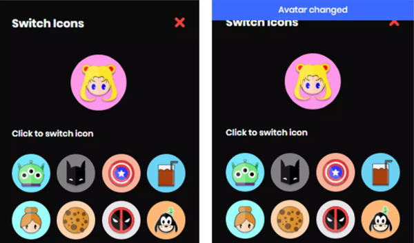
Visual feedback displayed after user's created an action
Incorporating brand and consistency
Branding was essential in forming Netflix Party's identity as it helps create an environment of
trust, familiarity, and recognition towards users. Consistency was another vital aspect of
ensuring that all assets, colors, logos, and icons are consistent in order to bring delightful
experiences to users.
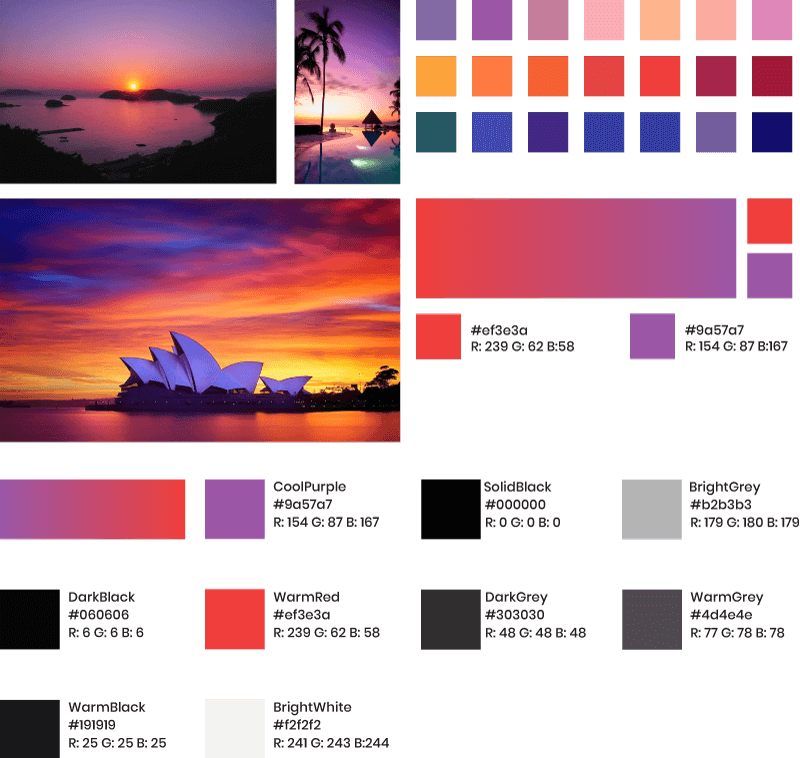
Familiarity and consistency
Popular chat platforms influenced the overall redesign layout of the extension. Design decisions
were made based on familiarity and consistency placements of where standard navigation, chat
input, icons, and buttons are typically found. Using this knowledge as a basis helps reduce the
amount of effort and time required for users to learn the new placement and layout of the
extension.
Design
Redesigns for Netflix Party.
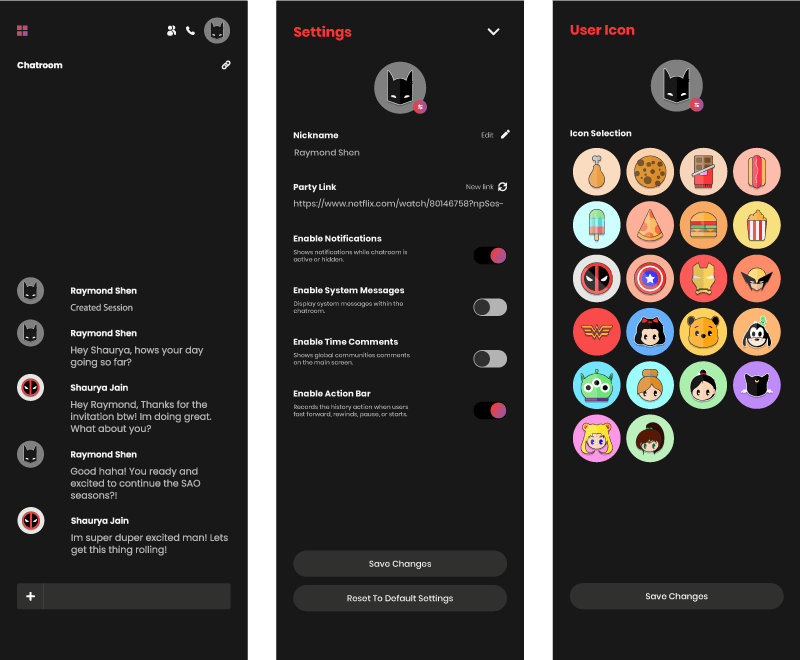
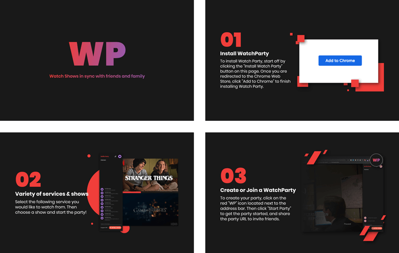
The Impact
The redesign improved user productivity & an increase in user installation.
9,800,000 +
installations in users since I started working as a Product Designer directly with the Founder
of
Netflix Party.
key learnings
What I’ve learned throughout the years at Netflix Party
My experiences and learnings at Netflix Party
I joined Netflix Party in the second year of college, after being recommended by a previous CEO
I’ve interned for as a designer. Working at Netflix Party, my responsibilities were tasked to
produce, oversee, and develop all assets, design, and branding for the company.
In the first few months working at Netflix Party, I was pretty scared, being that my first task
was to work
on a large scale project by myself. The role was profoundly challenging without any guidance on
how to approach a large-scale redesign project that I wasn’t familiar with. Though I learned a
lot throughout the months, making small to large-scale mistakes, not conducting sufficient user
research, testing, and data. But over time, I quickly learned that the quality of importance and
time needed to be spent on brainstorming, conducting user research, and understanding user
behavior before working on visual design is vitally important to improve any product redesign
and user experiences.
As of today, I still work at Netflix Party as a designer managing multiple projects from
branding to development and product designing. I had learned a lot throughout the years,
figuring out to manage large-scale redesign projects, working with developers, and understanding
the process of creating a product to designing and executing for production. Over the years,
there were multiple improvements, changes, proposed features, micro, and macro iterations to the
extension & website made to improve the product’s user experience based on user data, research,
and feedback. Today I’m still working on improving the product’s user experience and figuring
out other macro and micro challenges that users face.
other responsibilities
I also managed other design projects within Netflix Party
Other work I've done
Working at Netflix Party as a Product Designer, I also have helped managed and produced multiple
projects ranging from website, gallery, pitch decks, animation, and product development. To
learn more you can email me for further discussion.